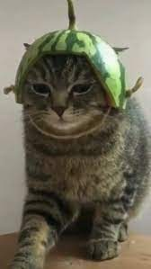
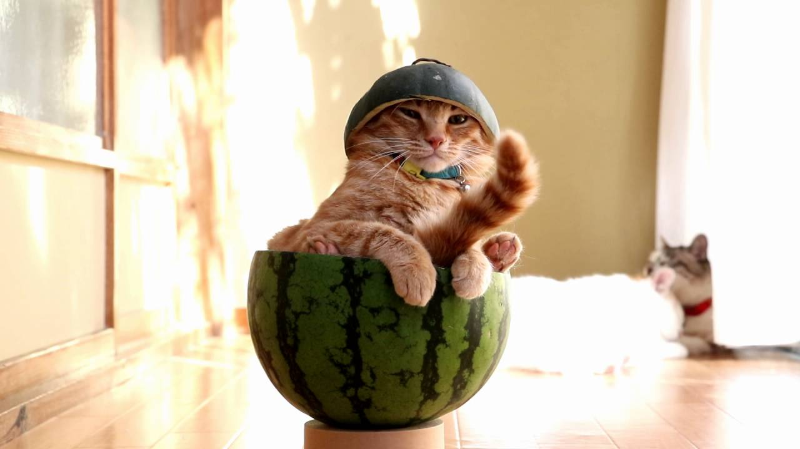
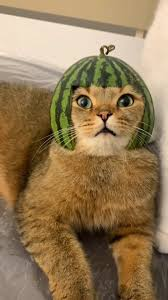

Lore about silly cats (idk what the heck this is)
back
- Silly cats is a series made up of silly cats in the silly universe, made by the verysilly team in 1999 (known by Verysilly Publishing at the time).
- The show was a hit on many platforms, however it had a dark theme about war, death, fights but with visuals that contrast it, it also had a great story.
- The series has spawned a hated spin-off , several games, and merch. Silly cats is beloved by many and is held as the best series about cats ever.


